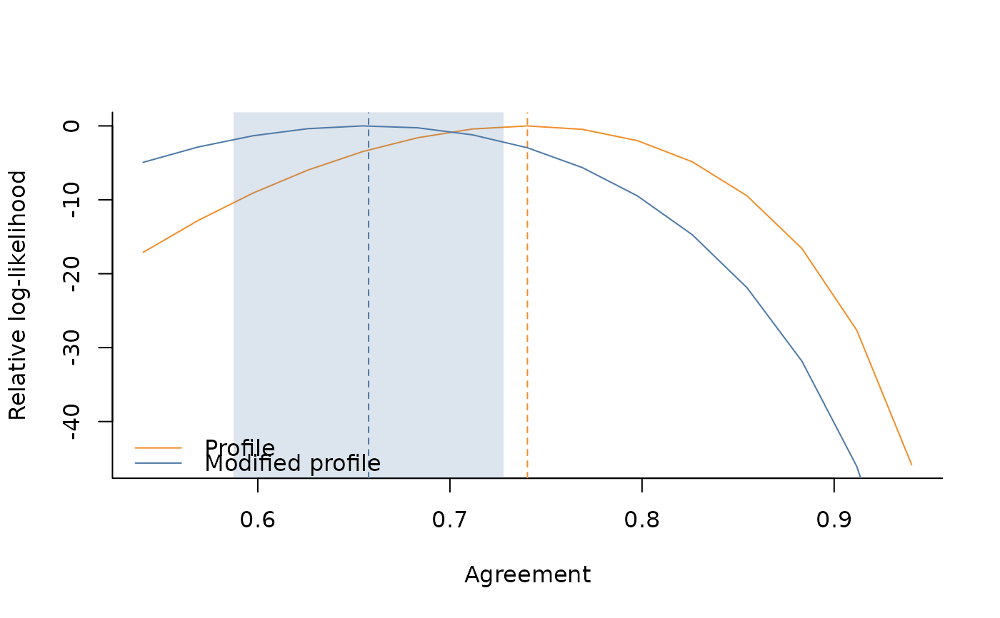

Compute the \(\Phi\) agreement proposed in Checco et al. (2017) via profile likelihood methods.
Arguments
- RATINGS
Ratings vector of dimension n. Ordinal data must be coded in {1, 2, ..., K}. Continuous data can take values in
(0, 1).- ITEM_INDS
Index vector with items allocations. Same dimension as
RATINGS.- WORKER_INDS
Index vector with worker allocations. Same dimension as
RATINGS. Ignored when MODEL == "oneway". Must be integers in {1, 2, ..., J}.- METHOD
Choose between
"modified"or"profile". Default is"modified"."modified": Uses modified profile likelihood with Barndorff-Nielsen correction"profile": Uses standard profile likelihood
- ALPHA_START
Starting values for item-specific intercepts. Vector of length J. Default is
rep(0, J)where J is the number of items.- BETA_START
Starting values for worker-specific intercepts. Vector of length W-1. Default is
rep(0, W-1)where W is the number of workers- TAU
Thresholds to use for the discretisation of the underlying beta distribution.
- K
Number of ordinal categories. If
NULL(default), inferred from data asmax(RATINGS). Provide explicitly when some boundary categories (e.g. 1 or K) may be absent from the observed data.- PHI_START
Starting value for beta precision parameter. Must be positive. Default is
agr2prec(0.5)(precision corresponding to 50% agreement).- NUISANCE
Vector containg either
"items"or"workers"or both. Defines which fixed effects to profile out during estimation.- CONTROL
Control options for the optimization:
SEARCH_RANGESearch range for precision parameter optimization. The algorithm searches in [1e-8, PHI_START + SEARCH_RANGE]. Must be positive. Default:
8.MAX_ITERMaximum number of iterations for precision parameter optimization. Must be a positive integer. Default:
100.PROF_SEARCH_RANGESearch range for profiling out nuisance parameters (item intercepts). The algorithm searches in [ALPHA_START[j] - PROF_SEARCH_RANGE, ALPHA_START[j] + PROF_SEARCH_RANGE] for each item j. Must be positive. Default:
4.PROF_MAX_ITERMaximum number of iterations for profiling optimization. Must be a positive integer. Default:
10.ALT_MAX_ITERMaximum iterations for alternating profiling. Must be a positive integer. Default:
10.ALT_TOLRelative convergence tolerance for alternating profiling. Must be positive. Default:
1e-2.
- VERBOSE
Verbose output.
References
Checco A., Roitero K., Maddalena E., Mizzaro S., Demartini G., (2017). “Let’s Agree to Disagree: Fixing Agreement Measures for Crowdsourcing.” Proceedings of the AAAI Conference on Human Computation and Crowdsourcing 5: 11–20. doi
Examples
set.seed(321)
# setting dimension
items <- 50
budget_per_item <- 5
n_obs <- items * budget_per_item
workers <- 50
# item-specific intercepts to generate the data
alphas <- runif(items, -2, 2)
# true agreement (between 0 and 1)
agr <- .6
# generate continuous rating in (0,1)
dt_oneway <- sim_data(
J = items,
B = budget_per_item,
AGREEMENT = agr,
ALPHA = alphas,
DATA_TYPE = "continuous",
SEED = 123
)
# estimation via oneway specification
fit <- agreement(
RATINGS = dt_oneway$rating,
ITEM_INDS = dt_oneway$id_item,
WORKER_INDS = dt_oneway$id_worker,
METHOD = "modified",
NUISANCE = c("items"),
VERBOSE = TRUE
)
#>
#> DATA
#> - Detected 50 items and 49 workers.
#> - Detected continuous data on the (0,1) range.
#> - Average number of observed ratings per item is 5.
#> - Average number of observed ratings per worker is 5.1.
#>
#> MODEL PARAMETERS
#> - Constant effects: workers
#> - Nuisance effects: items
#> Non-adjusted agreement: 0.740346
#> Adjusted agreement: 0.657684
#> Done!
# get standard error and confidence interval
ci <- get_ci(fit)
ci
#> $agreement_est
#> [1] 0.657684
#>
#> $agreement_se
#> [1] 0.03584847
#>
#> $agreement_ci
#> [1] 0.5874223 0.7279457
#>
# compute log-likelihood over a grid
range_ll <- get_range_ll(fit)
# utility plot function for relative log-likelihood
plot_rll(
D = range_ll,
M_EST = fit$modified$agreement,
P_EST = fit$profile$agreement,
M_SE = ci$agreement_se,
CONFIDENCE=.95
)
